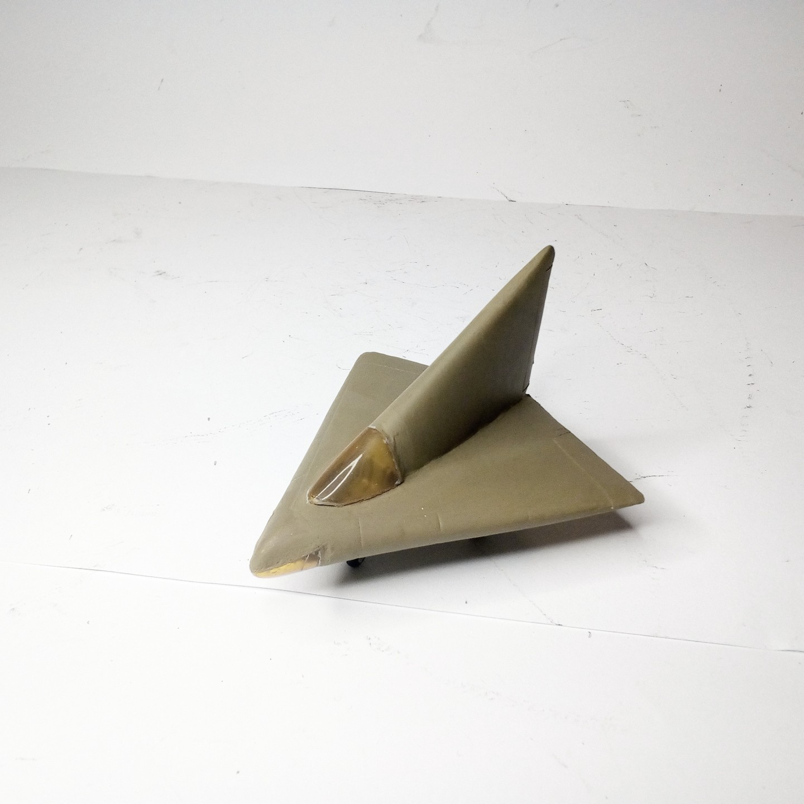
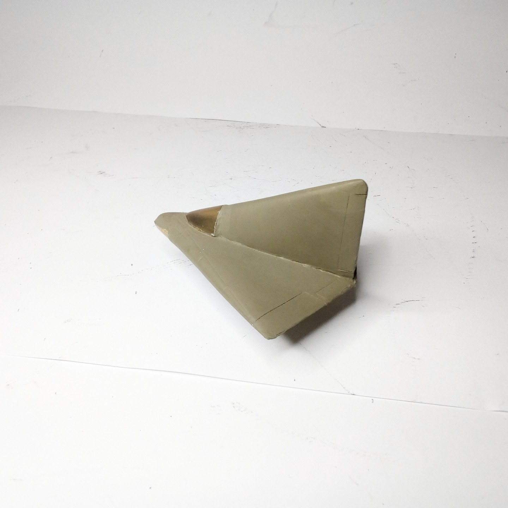

Aerei · scale model archive
Lippisch DM1
Lippisch DM1 — Kit: Airmodel, Scale: 1/72. Glite to serve as aerodynamic proof of concept of the projected P13a jet fighter, built by Darmstadt and…

Photo gallery

English description
Glite to serve as aerodynamic proof of concept of the projected P13a jet fighter, built by Darmstadt and Munich technical univerity students, captured at Prien (bavaria) in 1945
#1/72 #Airmodel
Descrizione italiana
Glite una serve as aerodynamic proof di concetto del projected P13a jet figther, costruito by Darmstadt e Munich technical univerity students, captured at Prien (bavaria) in 1945.